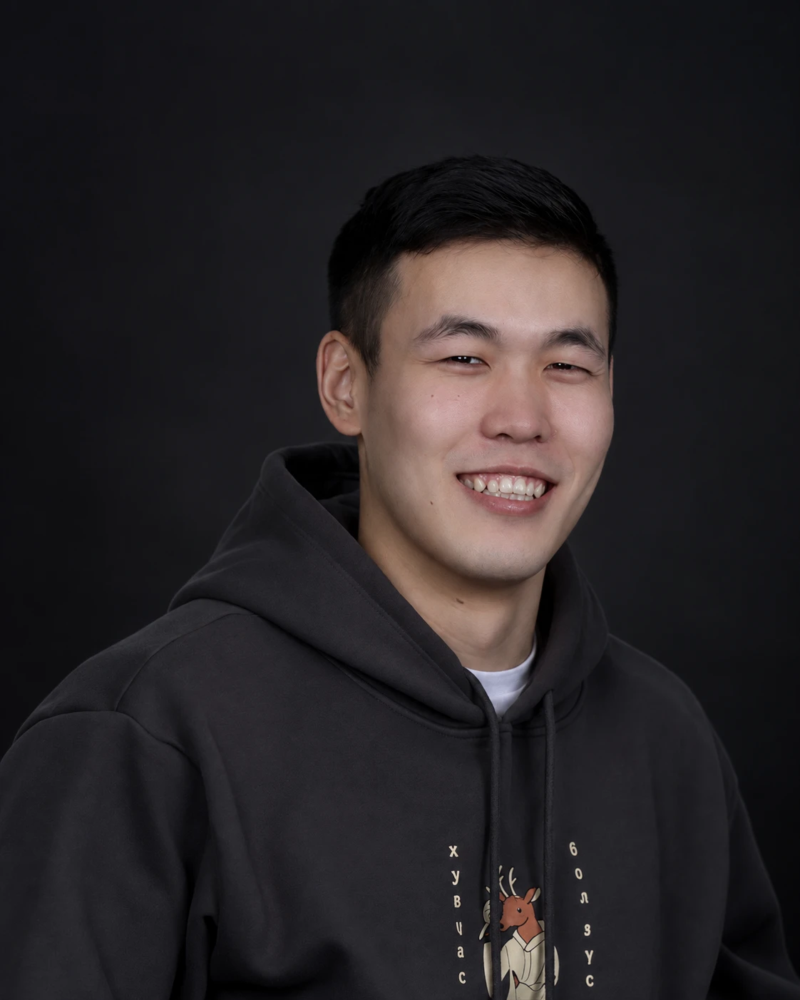

Design playground
From the court
to the canvas.
I’m Jamiyan — a UX designer who brings the curiosity, teamwork, and discipline I learned through basketball into digital products.
01 / Selected work
Selected work.

02 / A little about me
Basketball
turned designer.
I’m originally from Ulaanbaatar, Mongolia, and I’ve developed a strong passion for basketball. Funny enough, I didn’t enjoy the game much as a kid—until my older cousins kept beating me at it. Determined to improve, I joined a local club with a group of strangers, and over time, I fell in love with the sport.
Basketball taught me more than just how to play—it taught me how to communicate, work as a team, and think strategically under pressure. Those lessons have shaped the way I approach design. My competitive nature pushes me to stay resilient, find creative solutions when challenges arise, and keep improving until things work
Toolbelt
Curiosity doesn’t clock out